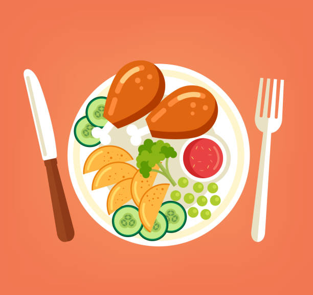

MacrOman is your friendly website for tracking calories and macros. Unlike big tracking apps, MacrOman includes local Omani and Gulf dishes, so you can track the food you actually eat.
Why MacrOman?
- Local Foods: Omani and Gulf dishes with verified macros.
- Quick Logging: Log your meal in a few taps.
- Track Your Goals: Set daily calorie and protein goals and see your progress.
- Mobile Friendly: Use it easily from your phone, at home or at the gym.

How It Works:
- Create your free account.
- Set your daily targets on the Goals & Profile page.
- Search the Food Database and log your meals.
- Watch your progress grow day by day.
What You Can Track
Every food in MacrOman shows the four numbers that matter most:
- Calories (kcal)
- Protein (g)
- Carbohydrates (g)
- Fats (g)
Ready to start? Join MacrOman today or learn more about us.